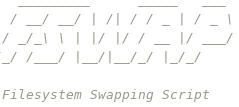

In my opinion, this is one of the coolest tools I've ever made.
Maybe you agree, maybe you think the desktop site is cooler, but this pretty much universally solved a whole load of problems I was facing all at once, and it's not even that complicated under the hood. Let's dive right in.
Basic Problems
Back in 2019, I was starting to play my trumpet a little bit more with the local community band and the local community orchestra. I had started using a laptop to show the music, since I didn't want to print all the sheet music they emailed to me. I'm sure there are enough paper copies of Beethoven's 7th Symphony floating around in the world. I had wired up an Arduino Uno to act as a USB keyboard and plugged an analog foot pedal in to it to let me scroll the music up and down. It just pressed the up and down arrows like a keyboard. The problem with this was that I was using an ancient Dell Latitude D630, which I picked out of my pile of laptops because it could hinge open to 180 degrees or so to act like a page on a music stand. It was pretty precarious.
At the same time, I had a growing collection of laptops and desktops that I used for personal things. These days I've shrunk that pile a little, but I'm still sitting next to 5 of them. They each have hardware quirks that make them suited for specific things I do, and I intend to use each of them until they can't function any longer even with repairs. My oldest is a Dell Inspiron 6000 from 2005 running a Pentium M and an IDE hard drive(!)
Another problem I had was a mess of a home folder that looked different on every machine I owned, largely thanks to their unique uses. My writings would be in ~/wri on one machine, ~/doc/wri on another, both places in a third, rscs would sync yet another location, and so on. I would have to pick which files I want to be able to sync with the server or I'd have to choose to mount my server with sshfs to access the rest, letting me get sloppy and nest things slightly differently in one place vs another. I'd get lazy naming things because "well, I can always just move them later" which I would inevitably never get around to.
So, between the ever diverging laptop configurations and filesystem arrangements and the music issue, I hatched a plan.
Add Another Laptop to the Pile?
OK, that's only half the plan.
When I was shopping for a 2-in-1 to work for playing music (and some digital art, since I was using an ancient decade-old Wacom Bamboo for the (admittedly limited amount of) digital drawing I do) I was somewhat disappointed by my options. I was shopping Dell, since I worked for them at the time, and the two options I thought would fit my needs were either a Latitude 2-in-1, which I could compare to my (frankly excellent) work machine, or the XPS 15 2-in-1. I could either pay more for the Latitude, or get a switchable AMD Radeon GPU in addition to the Intel integrated graphics. The drawback would be soldered-in storage and RAM, and the storage tiers were (of course) way more expensive than they realistically should have been.
I hatched a plan to buy the XPS with 120 GB of storage, the base model. I had a home server, and I figured I could come up with a way to only store the things I was using on the laptop, and use the server for everything else. Unrelated to the storage situation, the XPS turned out to be an excellent choice- the Vega M switchable graphics chip has worked out of the box on every distro I've tried and is very fast for a laptop this size.
My Existing Server Setup
I used my home server for a few things at that point. I had a tmux session open with irssi to talk to friends, I had the (then fairly new) XMPP server, and I had an SSH server. I would use the SSH server with rsynccstation to rsync a set of directories on my computers with the server. Every file would exist everywhere.
At the time, this was great. I had "backups" of all of my school files since they existed on every machine I used for school, I had some common configuration files that would auto-update for me on boot, my writings were on hand everywhere, and so were the books that I was reading. I had a synced directory for the music I was working on producing, as well. My smallest laptop had 480 GiB of SSD storage, and while it didn't have a ton of free space left, everything fit fine.
I knew this wasn't going to last forever, nor would it support a vastly smaller SSD size.
the New Way to File Sync
So, I put in the order for the new laptop, and while it was shipping I started brainstorming ways to make this all work.
I thought about just cutting back the files I sync, and in fact I could do a lot of that by just being selective with my rscs targets, but I knew I would want to use it for more than just basic tasks like that.
I also thought about using the server like a NAS appliance, where it would essentially just be a flash drive I mount somewhere. This would have worked in cases where I had internet and cases where I was disciplined enough to keep everything logically sorted, but if I lost internet or forgot to copy something, I would be in trouble. I had vivid memories of my first semester in college when I first had to shuffle my laptop and desktop. I lost files constantly, as you can read here.
Right before the laptop showed up, I was explaining virtual memory to someone when it occurred to me- why not treat the filesystem like memory?
Virtual Memory
If you don't know what I'm talking about, then don't worry. Virtual memory itself has very little to do with storage, this is just how I conceptualized a different idea. Virtual memory is the concept of setting a different "virtual" address space for each program, abstracting the addressing of the CPU (and thus other programs with potentially sensitive data) from any single process. The kernel then handles mapping the address space of the process to the physical memory.
Why this made me think about file management is because once you've started abstracting addressing, you can start doing some tricky things. For example, a process doesn't strictly need all of its memory in RAM. The kernel can "swap" parts of it onto your storage drive to save physical RAM. If the application needs that memory later, it simply gets put to sleep for an extra moment while the operating system loads it back into RAM. This can help relieve memory pressure from a system, and it can also allow for hibernation, which does this to every process at once and powers off the system entirely. Next boot it just restores all of its processes from disk rather than doing a clean boot.
Toying with memory swapping in my head and trying to analogize it was what made this concept finally click. I could simply "swap" files, just like a kernel might swap parts of memory.
What I implemented wasn't virtual memory, nor was it even tiered storage. It was really just a system for organizing and retrieving data from a server off of a dictionary. However, in my head it was always related since that's where the idea came from. In this case, you as the user act as the "kernel", and the file structure remains the same across every machine. The server would then be the "swap file", except persisted as if to constantly keep a valid (or nearly valid) hibernation image. Here's what I mean:
How FSwap Works
Components
Really, fswap consists of a few basic parts.
- a POSIX shell script called
fswap - Two symlinks to
fswapcalledfswapinandfswapout - A server with a file called
~/.fswap.pathnames
That's it.
The script assumes you have public key authentication and an SSH agent running, or alternatively some sort of cached credentials. It makes repeated SSH connections, something that I would like to one day solve but haven't gotten around to yet.
Procedure
Fswap does a few things, in order:
- Check the provided path and arguments. Do they make sense/exist as they should?
- Download the
.fswap.pathnamesfile from the server. - Find the corresponding line in that file and parse it. This results in a protocol and a path
- Run the associated routine for the specified protocol, providing the path. There's one routine for swap in, one for swap out.
- Remove the
.fswap.pathnamesfile, upload it if it's been modified.
Rsync
This is how I use fswap probably 99% of the time. I have a half-implemented Git code path that lets me keep track of what I have in ~/src, where, and where it came from, but I don't use it for anything but just that.
The rsync routines work like this:
fswapin
Take the given path, and make sure the parent directory exists. Also check if the target directory exists and save that for later.
Call rsync to pull the desired directory from the server and put it on the client machine. Uses the flags -avul, so Archive mode, Verbose, Update files rather than copy new, and preserve symLinks. Also sets --info=progress2 to show some information about what's going on, effectively so there's some sort of pulse on screen while it works.
Call rsync a second time to push any local changes back to the server, if the path existed. The same options are used again.
So, fswapin effectively pulls the files off the server and pushes up any new changes. Most recent file wins, no support for deleting stuff (which is annoying, but with good file management shouldn't be a huge issue most of the time).
fswapout
Take the given path, and make sure it already exists.
Call rsync to send local changes to the server, using the same -avul options as above.
Make sure rsync succeeded. If it returned any status at all, just quit because we might run into data loss.
If all went well, delete the directory to free up disk space. Nothing fancy, just rm -rvf.
Git/scp
Git integration is basic. It doesn't commit anything, just clone/pull/push. I intend to extend this at some point, but I haven't yet.
scp works exactly like the Rsync integration, just substitute scp for rsync above and tweak the options. I rarely use it, though, since rsync is generally the superior software.
It's Not Virtual Memory
Before I talk about what I use this for, I want to make one thing clear: this is not virtual memory. Whenever you hear me describe it, I always introduce it as "filesystem as virtual memory" in quotes, because it's a tool that I came up with when trying to explain memory swapping to somebody. I link the two since that's how the concept finally clicked for me. That's why you'll always see the quotes around "virtual memory", since it's really only emulating a single feature, not the whole thing.
However, the effect is intended to be somewhat similar. Just like you would suspend an inactive task on a cell phone or other constrained device and persist that program's memory to disk to free up resources, the intent with fswap is to do the exact same thing to projects on a disk. By treating each as its own little space that you can suspend and then get back to later, you're getting some of the benefits that virtual memory provides to a device. While I haven't gotten fancy with cgroups or anything to actually restrict what running applications can see what storage (thus bringing things a lot closer to a real analogy to virtual memory), the operational effect of fswap is intended to be roughly the same as process suspend and resume.
What I Use This For
That last paragraph should give you a pretty big hint about what I use this for. I'll explain this in two parts, each addressing the two problems I described above.
Constrained Disk Space
I do a lot of multimedia projects, and I have a small collection of GOG games. I also have that "new" laptop with the 120G SSD, which is probably still either my fastest or second fastest laptop, depending on the job. On that machine, however, I can work on virtually any project that I'm currently working on, almost as if I were on my desktop with its 4TB RAID array. All I have to do is fswapin the directory containing that project, do my work, and then fswapout the directory to push the changes back to the server and free up the disk again.
This ended up working so well that I have entirely retired rscs from daily use by now. Rather than syncing all my writings, dotfiles, school projects, music, and all sorts of other things in one go, I can just decide to listen to some jazz and pull my jazz music off the server. I can decide I want to work on writing a song that I half finished, pull the files for just that song, work on it, then get bored and push the files back. I have an fswap directory for virtually every week since March of 2020 for virtual church choir arrangements I've produced. fswap is the perfect tool to manage this across all of my devices. It scales perfectly as I add more project directories too, since the bottleneck would be how fast I can grep a list of them all.
Messy File Structure
Fswap solves this almost by accident. Most of the things I care about end up synced by rsync, so I had better be sure that I want to keep something where I put it or I'm going to be sorry when things are a mess later. This is a downside operationally, but that knowledge (and being bitten by the shortcoming a few times) has meant that I've become very good at sorting my files in a way that I can always find everything, all 3+ terabytes of random personal files.
Since I can tell GOG installers where to put games, I can also add their directories to fswap, too. This means I can leave off in a game on one machine, fswap it, leave to go on vacation without it on my laptop, then just download the whole thing save and all from the server.
Furthermore, every machine I own follows the same directory structure. I don't have to think about where I put something if I know where I put it on my desktop, because they're literally the same exact directory. No more mess of divergent directory structures that live machine-to-machine.
Future Goals
I have two types of goals for Fswap, goals I will implement at some point (probably soon), and goals I might not ever even bother with.
I Will Implement These
Better Git Integration
It's not hard to see why I would want this, I think. Git is an amazing tool for file version tracking, and unlike rsync it supports file deletion.
I also already use Git for every piece of source code I have, even one-off projects that I delete quickly tend to end up in a local Git repo.
There are some things that I do that probably belong in Git but don't need to be tracked super carefully, like my task list. It's already in Git, but I don't use fswap to manage it since it doesn't commit the changes. If it did, I'd have history tracking and conflict resolution, but I could just sync the directory as if I were using rsync.
Better File Name Handling
I didn't mention what's probably the most annoying bug with fswap at the moment. It's entirely possible to work around it, but you basically have to create your whole directory structure with the program in mind at the moment, because any directory or parent of a directory you want to sync must never have any spaces in the name. This is a shortcoming with how shell parses strings and the fact that the delimiter between parameters is a space. I'm sure I'll be able to figure out where the script keeps dropping spaces, it's generally not too hard and just requires some care, but my own preference is for no spaces anyhow since I do a large portion of my work on the command line.
I Might Implement These Some Day
Directory Not Found Autodetection
I'm not sure what I would need to do to make this work, but I had imagined from the start that all you would have to do to trigger fswapin is to try to cd to a directory that exists in fswap. The idea would be that the entire swap process would be completely transparent. I didn't implement this mostly because typing fswapin project never seemed like a big deal to me. It was something of a priority on my initial roadmap, but the tool proved to be so useful without it that I never bothered.
There's also the issue of how I would go about this. I use a fork of DWM and sometimes Sway, so I have a status bar that I could just slap an indicator on to tell me when it's done. However, I've released fswap to my GitLab, which means other people can use it. I don't want to advertise a feature that may break things if someone else tries it without absolutely perfect installation. If you have to explicitly swap in every directory, then there's progress built in to the command to do that.
On the flip side, using Fswap basically requires knowledge of the terminal to work properly. Not only that, but this requirement to use the terminal excludes phone and tablet users to some degree. I'll probably at least look up what I would have to do to handle this, even if I never implement it.
Directory Listing Integration
This is something that wasn't really in the initial roadmap, but probably would have been nice just as a convenience. Essentially, this would make the entire process transparent to the system, not just the process of grabbing a new directory on access.
Again, this runs into some of the same pitfalls as the directory not found support, or possibly worse. If the kernel returned the list of fswap-available directories as the contents of the disk, it would be impossible to know what's actually on the system. This would make fswapout a critical piece to stay on top of. It wouldn't be an 'oh well, I have more disk space' matter if something didn't get removed, it would be a real problem since you would need to hunt down what's actually real and what's just available. Alternatively, I could implement automatic fswapout, but then you run the (rather serious) risk of having something you need on hand swapped out from under you, or worse a full disk when you're offline.
It's much more likely that I'll implement a better list mechanism than what's currently there that reads/parses the output of ls and overlays available directories at any given location, as well as a more streamlined find like tool. If somebody actually wants it, I could help author a Dolphin or Nautilus plugin to make fswap-available directories accessible from the GUI, regardless.
Should You Use This?
This is probably my favorite of my personal tools, but before you go out and try it, here's a few questions to ask:
- How many big projects do you tend to do in parallel?
- Is your smallest computer space constrained?
- Do you have a lot of random machines you use regularly?
- Do you have a home server?
Pretty much the only one that's required to get use out of fswap is the last one, though you can quickly convert an old PC into a server in a pinch, so if you have more than one computer you technically can make it work.
However, if your answers were something along the lines of "a lot", "yes", and "yes", you probably could get some mileage out of this, so I'd encourage you to try it! Feel free to report any bugs you find on GitLab or by email and I'll either fix it or help you fix it, whichever works better.
Needless to say, I invoke fswap several times per day normally, and it's literally saved me days of extra work just finding and organizing things.
Anyhow, that's a tour of fswap, my file swapping script.